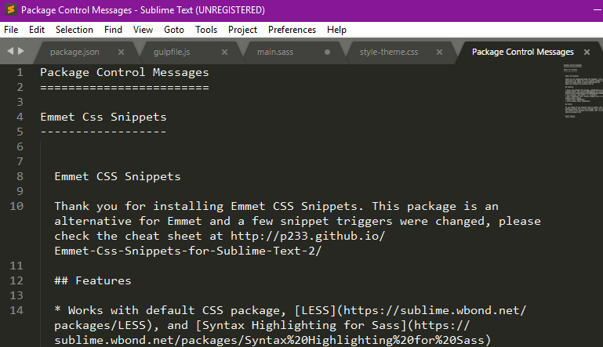
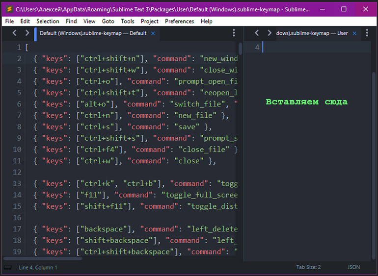
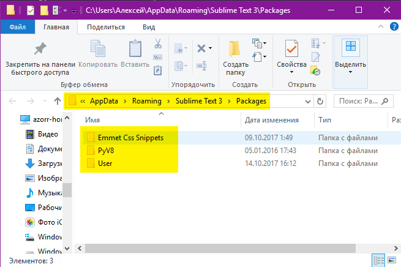
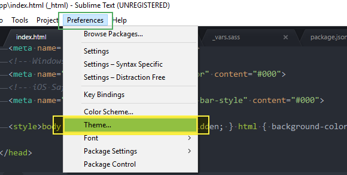

Скачать дистрибутив Sublime Text 3: http://www.sublimetext.com/
По умолчанию Sublime Text - выглядит печально 
Поэтому установим все необходимые плагины.
Настроим Package Control
Нажимаем: Ctrl + Shift + P
На MAC другое сочетание клавиш, возможно Cmd + Shift + P
Жмем Enter и устанавливаем Package Control
Package Control необходим для того, что бы можно было устанавливать необходимые пакеты и плагины для Sublime Text
После установки Package Control - установим все необходимые плагины.
Emmit - нужен для того, что бы максимально быстро писать html и css код ;
Установим Emmit
Нажимаем: Ctrl + Shift + P
Имеем список доступных пакетов (серый список)
И судя по сообщению - установка Emmet завершена!

Следующий плагин который установим: AutoFileName
- Он нужен, что бы максимально быстро прописывать пути до файлов.
Для установки нажимаем: Нажимаем: Ctrl + Shift + P
И в появившемся списке пакетов - набираем в строке: AutoFileName
Следующий плагин который установим: Gist
Гисты - это кусочки кода, которые хранятся на gist.github.com.
Причем эти кусочки кода можно прямо из Sublimetex - извлечь с gist.github.com.
Для установки нажимаем: Нажимаем: Ctrl + Shift + P
Установили Gist!
Рекомендуется посмотреть видео по настройке Gist
СЛЕДУЮЩИЙ ПЛАГИН: SASS
Важно!
НЕ ЗАБЫВАЕМ УСТАНОВИТЬ Gulp sass в Terminal
Командой: npm i gulp-sass --save-dev
Да ХРЕН ТАМ! - НЕ БУДЕТ РАБОТАТЬ!
Еще необходимо доставить еще пакет:
Скрина нет) Так как уже поставил - а 2 раза установщик не показывает.
Теперь установим Внешнее оформление Sublime Text
Начали:

и 2 варианта цветовых оформления на выбор:
Далее переходим собственно к настройке Sublime Text 3

Отrроется файл настроек Sublime Text3
Правим настройки прям в этом же файле и нажимаем Ctrl + S
Ссылка на статью с настройками Sublime Text
Однако, при простом копировании настроек из статьи по ссылке - может возникать ошибка - МОл, не может найти тему One Dark!
Проблема решилась - выбором нашей темы "One Dark.."
напрямую через меню Sublime Text3:
Порядок! Продолжаем настройку :
Включить отображение непечатных символов:
нужно добавить строку в пользовательский файл настроек Sublime Text → Preferences → Settings — User.
Допишем код ЧЕРЕЗ ЗАПЯТУЮ в наш файл настроек:
"draw_white_space": "all" //Показать все символы
Меню выключили - но можно его оперативно включать.
| Установка темы One Dark на MAC |
Выполняем стандартную установку в Sublime Text 3 через комбинацию клавиш Cmd + Shift + P
1) Ставим: Theme - One Dark
2) Ставим: One Dark - Color Scheme
Но потом, скорее всего произойдет сбой ТЕМЫ!
Что бы это исправить - идем как на картинке:
SumbLime Text -> Preferences -> Color Scheme...
И вуаля! Тема One Dark у нас встала!
| Установка темы на MAC - Завершена! |
Далее - откроем настройки клавиатуры:
Preferences → Key Bindings (Сочетания клавиш)
Далее переходим к Гисту:
Ссылка на статью с настройками Sublime Text
и вставляем ее сюда - в правую вкладку:

{ "keys": ["alt+shift+f"], "command": "reindent" },
Далее - откроем настройки клавиатуры Sublime Text3 на MAC:
Preferences → Key Bindings (Сочетания клавиш)
В открывшееся правое окно (документ) - вставляем строчку (см. инструкцию Windows):
И вуаля - все работает!
А точнее - выполняется Выравнивание строк кода!
Важно, обязательно оставить квадратные скобки - иначе ошибка будет и не будет работать.
Выравнивание на MAC - РАБОТАЕТ!
Далее настраиваем:
и откроется папка Packages

Эта папка нужна для быстрого переноса настроек - на другое рабочее место.
Просто копируем все содержимое этой папки Packages
Или же можно сохранить только отдельные настройки из папки User
Включение боковой панели Sidebar
ЗАКОНЧИЛИ!
БЫСТРАЯ НАСТРОЙКА Sublime Text 3 ЗАВЕРШЕНА!
Можно приступать к работе по верстке сайтов!
Включим еще подсветку скрытых символов :
И пропишем строку в конец файла,
ВАЖНО поставить ЗАПЯТУЮ после предыдущего параметра:
Изменить шрифт в Sublime Text 3
Пропишем нужный нам шрифт:
"font_face": "Courier New",
Установим еще дополнение для быстрого просмотра цвета:
Вызовем установщик: Ctrl + Shift + P
ГОТОВО!
Можно настроить - с какой стороны подсвечивать квадратик.
Включить "Черную (Темную)" тему для "Side Bar"

И выбрать:
Настройка переносов длинных строк: